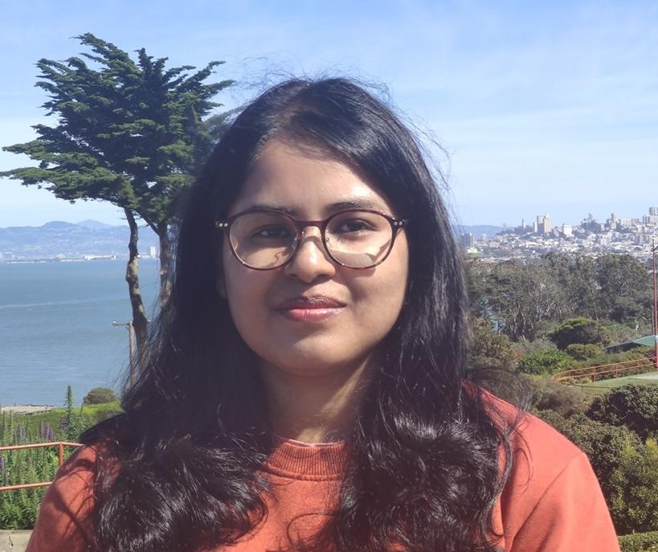

Bijita Sarma
Assistant Professor, Physics,
Chennai Mathematical Institute (CMI)
Quantum Computing and Quantum Technology
We develop and analyze the quantum world across scales, from photons and phonons to superconducting circuits, with a primary emphasis on rigorous theoretical modeling and algorithm design. Our aim is to advance quantum computing, sensing, and metrology by formulating and studying architectures and protocols that bridge principled theory with experimentally relevant implementations. We focus on constructing and analyzing fast, high‑fidelity quantum gates, variational and simulation algorithms, and quantum‑enhanced protocols, while developing machine learning for quantum systems and quantum machine learning within a unified theoretical framework. At the same time, we remain deeply rooted in fundamental quantum physics: quantum optics, optomechanics, magnonics, and cavity QED, where concepts such as unconventional blockade, ground‑state cooling, and hybrid optomechanical platforms inspire new theoretical paradigms for sensing, processing, and harnessing information from a distinctly quantum perspective.
Focus Areas
Quantum Error Correction
RL-powered pulse shaping and continuous-time protocols for robust, fault-tolerant operations on noisy superconducting processors.
Quantum Control & Gates
Fast, high-fidelity gate design in multilevel superconducting circuits using optimal control and deep reinforcement learning.
Quantum Algorithms & QML
Variational optimization, quantum simulations, and quantum machine learning architectures tailored to near-term hardware.
Quantum Sensing & Metrology
Quantum-enhanced sensing protocols and precision metrology using hybrid opto–magno–mechanical and cavity-QED platforms.
Superconducting Circuits
Design and control of multiqubit superconducting architectures, couplers, and fluxonium/transmon devices for scalable quantum processors.
Quantum Optics & Optomechanics
Nonclassical light and mechanics, ground-state cooling, and blockade phenomena in cavity optomechanical and related platforms.
Magnonics & Cavity QED
Hybrid magnon–photon–phonon systems for quantum information processing, sensing, and cavity-QED-inspired quantum technologies.
Recent Highlights
Group News
March 02, 2026
Bijita joins CMI and started the QCQT group!
Announcements
PhD and Postdoctoral Positions
We invite highly motivated PhD students and postdoctoral researchers interested in our research areas to join the group. Applications are now open through the Chennai Mathematical Institute admissions portal .
Contact PI